顾客角色 · 风格方向第一轮
同样三位顾客，按三种画法各出一版，都放进真实的咖啡馆地板上对比。先只选方向，细节下一轮再修。
走路动画对比
从左到右：现在、A、B、C。同一位顾客向右走。
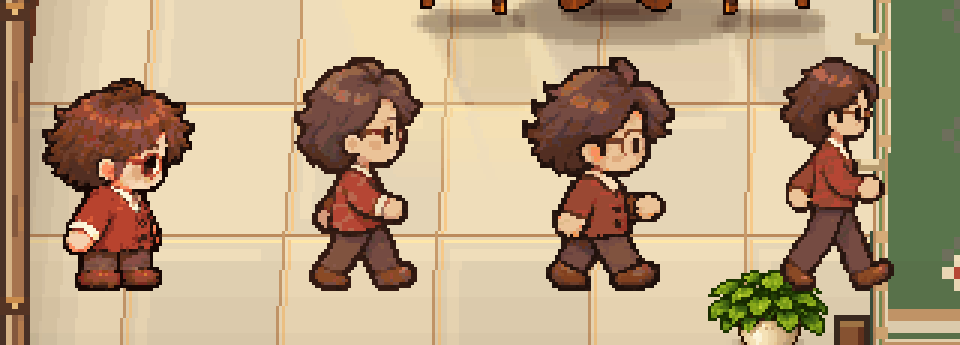
现在游戏里的
大头 Q 版，约 2.3 头身。原图是平滑插画缩小而成，不是按像素画的，所以小尺寸下偏糊、三个人轮廓接近。
手机上的实际大小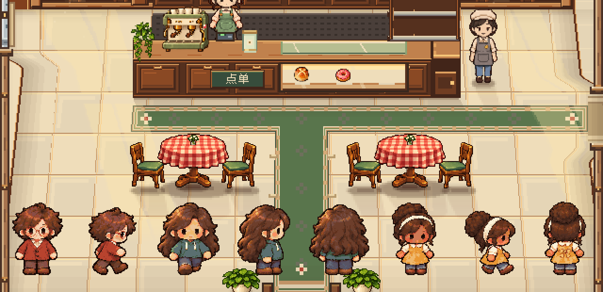
放大细看（六个姿势：正面、正面迈步、侧面、侧面迈步、背面、坐姿）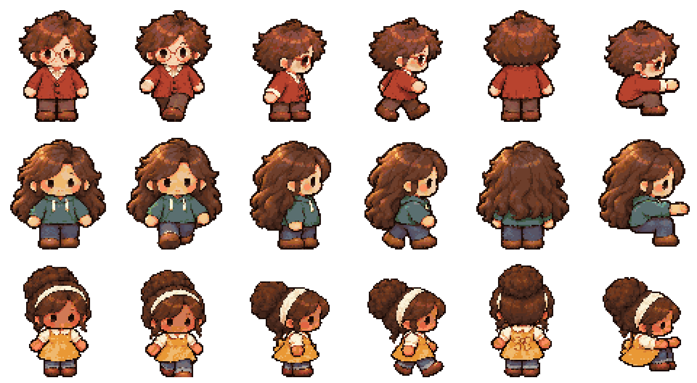
方向 A · 贴近已批准样张
约 3 头身，豆豆眼，发型轮廓各不相同。
手机上的实际大小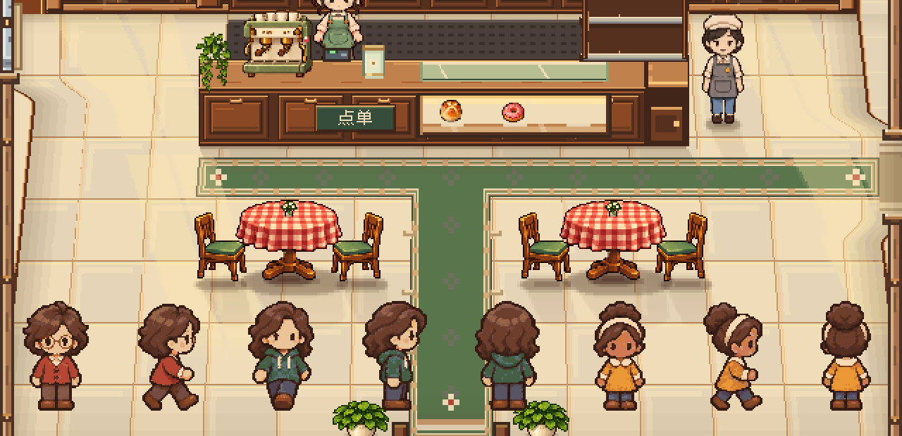
放大细看（六个姿势：正面、正面迈步、侧面、侧面迈步、背面、坐姿）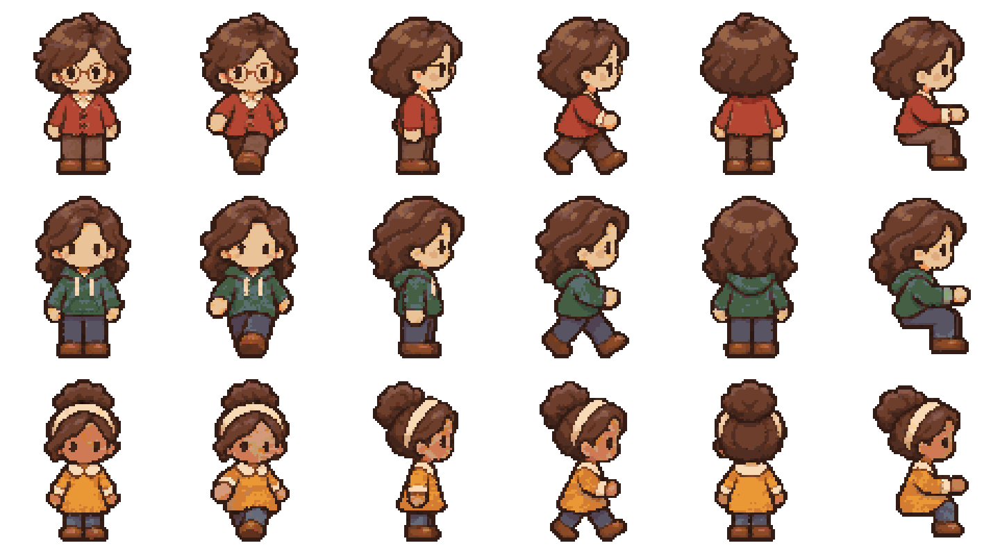
走路循环的每一帧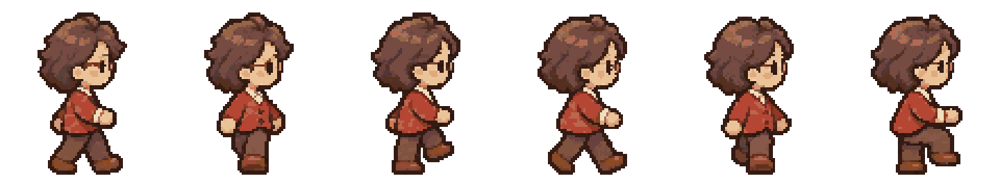
Codex 原图
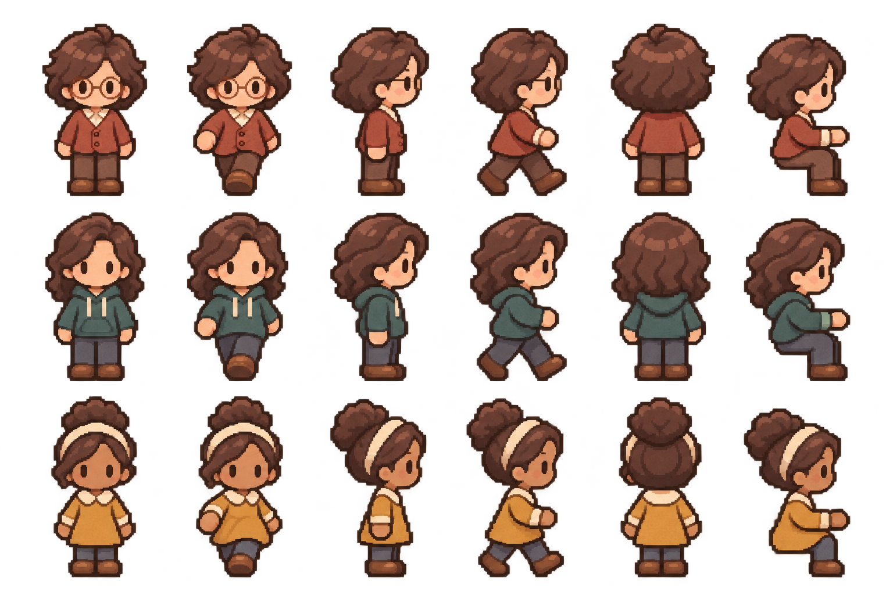
方向 B · 精修 Q 版
保留现在的大头比例，改成干净色块和豆豆眼。
手机上的实际大小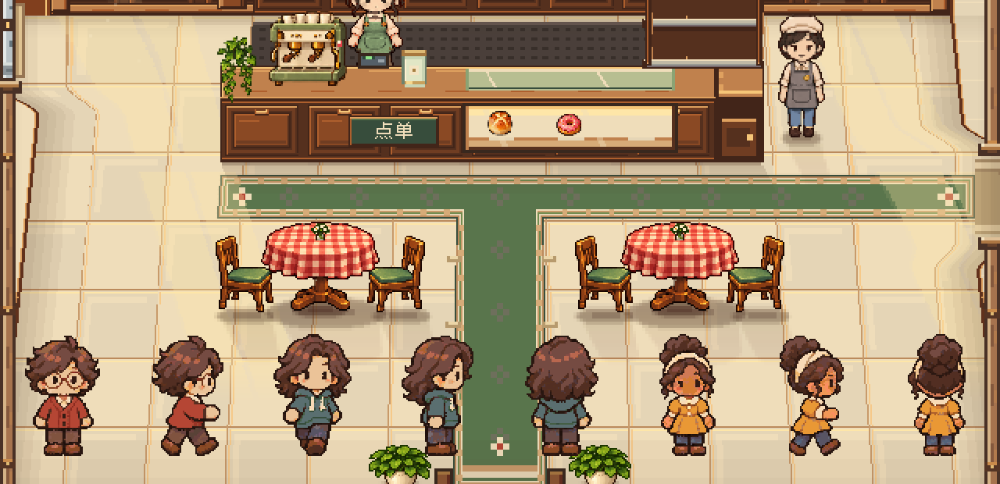
放大细看（六个姿势：正面、正面迈步、侧面、侧面迈步、背面、坐姿）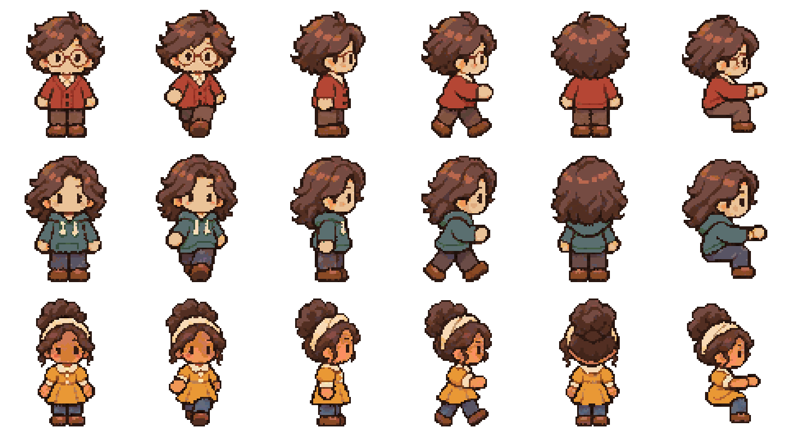
走路循环的每一帧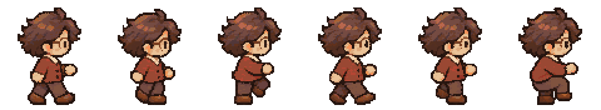
Codex 原图
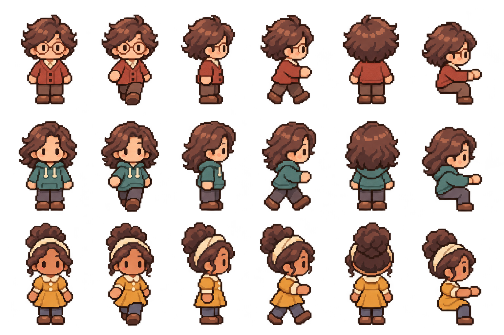
方向 C · 高个小镇居民
约 3.5 到 4 头身，体型各不相同，更像经典像素模拟经营里的村民。
手机上的实际大小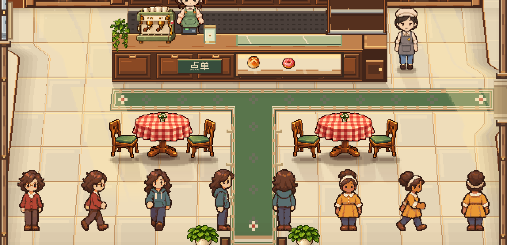
放大细看（六个姿势：正面、正面迈步、侧面、侧面迈步、背面、坐姿）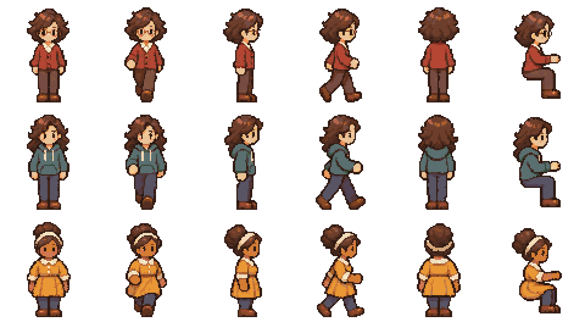
走路循环的每一帧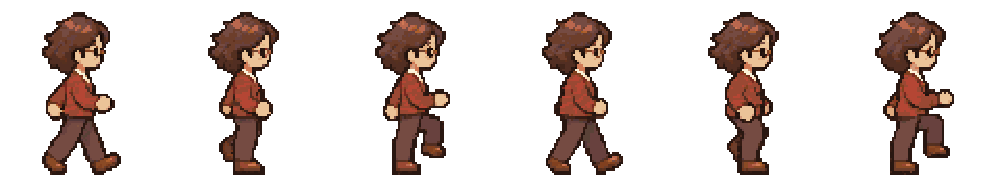
Codex 原图
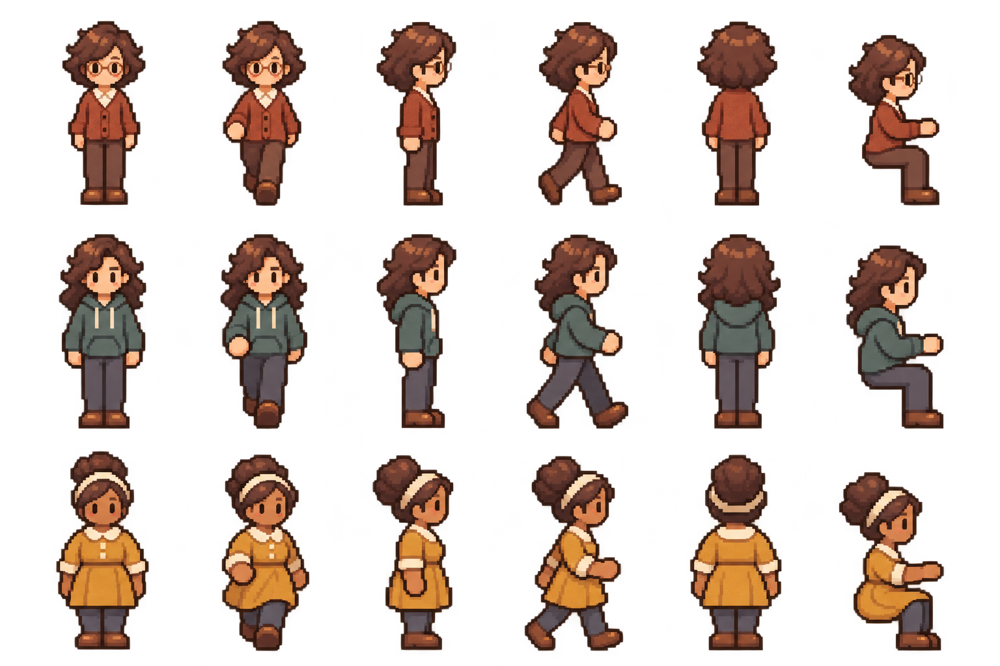